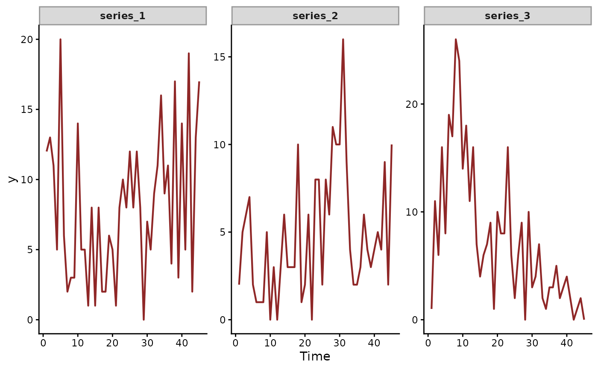
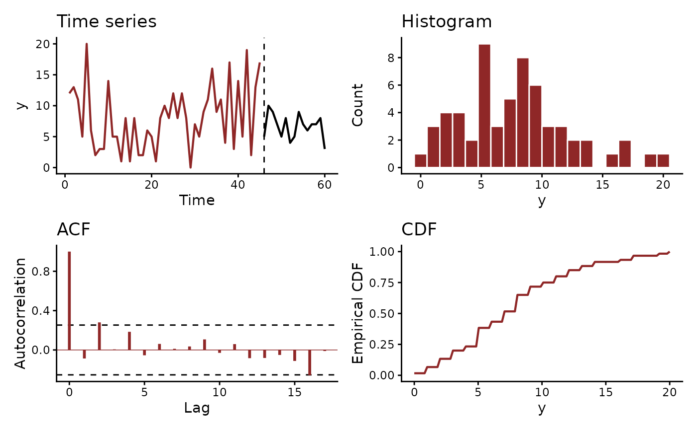

Runs the checks mvgam() applies to its data before compiling a
model. It tests the columns, factor levels, time spacing and
response support of a proposed model. A failure raises the error
mvgam() would raise. An optional plot shows each observed series.
Usage
mvgam_data(
data,
y = NULL,
family = gaussian(),
formula = NULL,
trend_formula = NULL,
data2 = NULL,
plot = TRUE,
newdata = NULL,
series = NULL,
lines = TRUE,
n_bins = NULL,
log_scale = FALSE
)Arguments
- data
Long-format
data.frame(or list) carrying at least the response column and atimecolumn. A latent trend also needs each row's series: aseriescolumn, the column the trend constructor'sseriesargument names, or thegrandsubgrcolumns of a hierarchical trend. Closure-unit families (occ(),nmix()) always requireseriesandvisitcolumns. A family without a defaultcapalso requires acapcolumn.- y
Optional name of the response column.
NULL(default) takes the response offormula, or"y"whenformulaisNULL. A name that differs from the response offormulais refused.- family
A
family,brmsfamilyor mvgam family object. Defaults togaussian(). The response must lie in the family's support, such as non-negative integers forpoisson()or(0, 1)forBeta(). Acapcolumn must hold integers no smaller than the response and stay constant within a closure unit. Multi-response families (diri(),multi(),categ(),mvn(),mvt()) are refused.mvgam()andjsdgam()check their data at fit time.- formula
Optional observation formula, as a
formulaor abrmsformula. A closure-unit family takes a detection formula in the samebf(). Every column the formula uses must be indata. These include covariates, offsets, random-effect grouping factors and the columns of addition terms such astrials()andweights(). Those columns may not holdNA. Atrials()count may not fall below its response. A missing response is allowed.mvgam()keeps its row on the time grid.- trend_formula
Optional trend formula (e.g.
~ AR(time = week, series = species) + s(env)), as passed tomvgam(). Its trend constructor names the time and series columns and decides whether times must be evenly spaced:CAR()andZMVN()accept gaps, most others refuse them.NULLchecks the data for a model without a trend, which needs no series column. Its covariates, offsets and grouping factors get the same checks as those offormula.- data2
Optional named list of further model data, as passed to
mvgam(). A formula variable found here, such as a matrix covariate, need not be a column ofdata.- plot
Logical.
TRUE(default) draws the observed series with the panels ofplot(fit, type = "series"). Several series draw as one facet each. One series draws four panels: the time series, a histogram, the ACF and the empirical CDF.- newdata
Optional held-out data in the long format of
data. The time series panels draw it in black after a dashed line at the first test time. The histogram, ACF and CDF of one series pool the training and test values.- series
Series to plot:
NULL,"all", a series name or a positive index into the series levels.NULLdraws every series of multi-series data and the one series otherwise. Data without a series column plot as one series named after the response.- lines
Logical. Plot lines (default) or points.
- n_bins
Optional histogram bin count.
- log_scale
Logical. Plot the response as
log(y + 1).
Value
Invisibly, an mvgam_data list with elements data (the
validated data), family (the resolved family), series_levels
(NULL when the data name no series), n_series, time_range,
n_obs, n_missing (the count of missing responses) and plot
(the ggplot or patchwork object when plot = TRUE, else
NULL). With plot = TRUE the plot is also drawn on the active
device.
See also
mvgam(), mvgam_formula(), jsdgam(),
sim_mvgam(), sim_closure_unit_data(),
get_prior.mvgam_formula().
Other model fitting:
check_newdata(),
jsdgam(),
mvgam(),
mvgam_formula(),
mvgam_multiple(),
pivot_detection_array(),
pivot_species_matrix(),
series_to_mvgam(),
stancode.mvgam_formula(),
update.mvgam()
Examples
set.seed(1)
simdat <- sim_mvgam(family = poisson(), n_series = 3L,
n_timepoints = 60L)
# Check the frame for a Poisson trend model and plot every series
mvgam_data(simdat$data_train, family = poisson(),
trend_formula = ~ AR())
#> ✔ Data check passed for family 'poisson (link = log)'.
#> • series: 3 levels
#> • time: 1 to 45
#> • n obs: 135 (0 NA)

# One series in four panels: time series, histogram, ACF and ECDF.
# The test data follow the dashed line.
mvgam_data(simdat$data_train, family = poisson(), series = 1L,
newdata = simdat$data_test)
#> ✔ Data check passed for family 'poisson (link = log)'.
#> • series: 3 levels
#> • time: 1 to 45
#> • n obs: 135 (0 NA)

# A response the family cannot take is refused before any Stan
# compile. The error names the column, the values and the support.
counts <- simdat$data_train
counts$y[3L] <- -1
try(mvgam_data(counts, family = poisson(), plot = FALSE))
#> Error : 'y' has values outside the support of family 'poisson'.
#> Requires: 0 <= 'y' (integers only).
#> Observed range: [-1, 26]. 1 of 135 values fall outside, the first at row
#> 3.
#> Check the column for missing-data sentinels such as -1 or -999.
# AR() assumes evenly spaced times. CAR() models the gaps.
gappy <- simdat$data_train[simdat$data_train$time != 5L, ]
try(mvgam_data(gappy, family = poisson(), trend_formula = ~ AR(),
plot = FALSE))
#> Error : The trend needs regularly spaced times in 'time'.
#> Gaps between times range from 1 to 2.
#> Add the missing times as rows with an NA response.
#> 'CAR()' models a trend over irregular times.
mvgam_data(gappy, family = poisson(), trend_formula = ~ CAR(),
plot = FALSE)
#> ✔ Data check passed for family 'poisson (link = log)'.
#> • series: 3 levels
#> • time: 1 to 45
#> • n obs: 132 (0 NA)